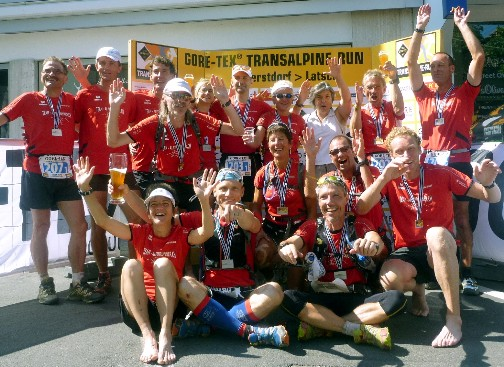

Info Transalpine run
Lehrlingshaus Chur

wir sind auch dabei: vom 29. Aug. bis 5. Sept. 2015
Wir informieren über die Teilnahme mit Alpinrunner beim Transalpine run.
Marco und Thomas erzählen von ihren Erfahrungen aus dem vergangen Transalpine-run - Teilnahme und erklären wie das Ganze organisiert ist. Wir planen für die Austragung im 2015 wieder mit mehreren Teams gemeinsam an den Start zu gehen. Um die Reservationen und Unterkünfte frühzeitig zu sichern, sollten die Team's im Januar 2015 zusammengestellt werden. Wer selbst beim Transalpine-run 2015 teil nehmen möchte, sollte den Infoabend nicht verpassen. Natürlich sind auch alle Interessierten herzlich eingeladen um Fotos und Film von vergangenen Anlässen und einige Impressionen der Alpinrunner-Teams zu sehen.
Berichte der Teilnahmen vom 2008 / 2009 / 2011
Infoabend am Freitag, 16. Januar um 19 Uhr im Bündner Lehrlingshaus in Chur